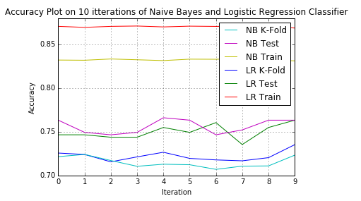
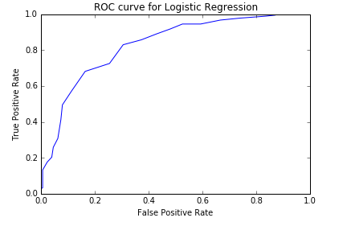

The project first reads the tweet file and extracts the tweet text by splitting it using comma and passes it to getTweetText function. GetTweetText function applies below mentioned cleaning to clean the tweet text to create the bag-of-words model. Following cleaning techniques are applied on the tweet text:
After creating the bag-of-words for every tweet, hashing TF is applied to transform the RDD to the RDD of Sparse vector. Then transformation using the IDF is performed to generate the tfidf vector for the tweets. This new RDD of tfidf is then zipped with RDD of polarity to form a object of LablePoints. The RDD of new LabledPoints is used for training the model.
This project uses bag-of-words model to make predictions on the tweets. Cleaned bag-of-words is passed to hashing transform function. So the feature space is consists of words as its features. As I have applied IDF transform on the tweets the word that is rare and occurs in many tweets is the most important tweet. Thus forming a descending order of features tweets. In this project I have decided to use the unigrams for features. This increaded my tweet prediction accuracy considerably. I didn't got enough time to apply both of these methods. But I will try to apply them during the summer break.
In order t achieve higher accuracy, I have applied IDF transformation on the bag-of-words model to get more accurate and precise feature space. This helped me increase my accuracy sufficiently enough. In addition to that I have used Snowball Steamer to get more accurate root words. Moreover I have used html.unescape to replace html escape characters with their meaning. I transformed all the apostrophe's to their respective meaning to get the proper words.
I have created my own functions to calculate accuracy, precision, recall, f1score. I have also created a function to compute rate of false positive and true positive in order to plot ROC curve.
For Logistic regression, I have increased number of iterations so as to train the model properly.
The accuracy plots of Naive Bayes classifier and Logistic Regression classifier are plot in single graph to compare amongst themselves.
The ROC curve is plot for Logistic regression as it is not available for Naive Bayes classifier.
From the plot you can clearly see that, in this case, Logistic regression overfits the most as the difference between the train-train and train-test accuracy is more.
The effectiveness of classifier can be evaluated on accuracy, but there are other metrics as well, such as Precision, Recall and F1 measure.
Precision measures the exactness of a classifier. A higher precision means less false positives, while a lower precision means more false positives. This is often at odds with recall, as an easy way to improve precision is to decrease recall.
Recall measures the completeness, or sensitivity, of a classifier. Higher recall means less false negatives, while lower recall means more false negatives. Improving recall can often decrease precision because it gets increasingly harder to be precise as the sample space increases.
Precision and recall can be combined to produce a single metric known as F-measure, which is the weighted harmonic mean of precision and recall. I find F-measure to be about as useful as accuracy. Or in other words, compared to precision & recall, F-measure is mostly useless, as you’ll see below.
ROC curve is plotted against false positive rate against true positive rate for different values of threshold. The closer the curve follows the left-hand border and then the top border of the ROC space, the more accurate the test. It shows the tradeoff between sensitivity and specificity.
Refer to the plot of ROC curve.
I cannot find a spark API which I can use to find the top 20 features.
Logistic regression performs the best. As Naive bayes takes the assumption that all features are independent and therefore its performance is not that good.
5 tweets correctly classified with their probabilities are below:
5 tweets incorrectly classified with their probabilities are below: